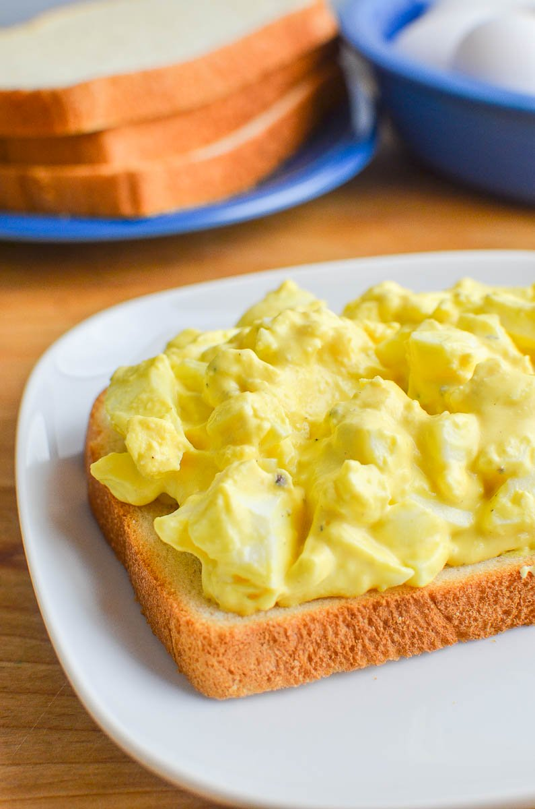

Tofu Egg Salad

Description
I was amazed by how similar this tastes to egg salad. It's easy to throw together and tastes great in wrap or sandwich. The black salt is important here to giving it its eggy taste. I like to throw in some diced onion and/or celery for crunch.
Ingredients:
- 1 block medium firm tofu
- 6 tbsp vegan mayonnaise
- 2 tbsp nutritional yeast
- 1 tbsp yellow mustard (or slightly more or less, depending on how much you like mustard)
- 2 green onions, chopped (or 1/4 finely chopped white/red onion)
- 3/4 tsp black salt
- 1/4 tsp turmeric
- pepper to taste
Directions:
- Chop tofu into small cubes. Add to bowl and mix with other ingredients.
- Serve on toasted bread with lettuce or in a wrap.